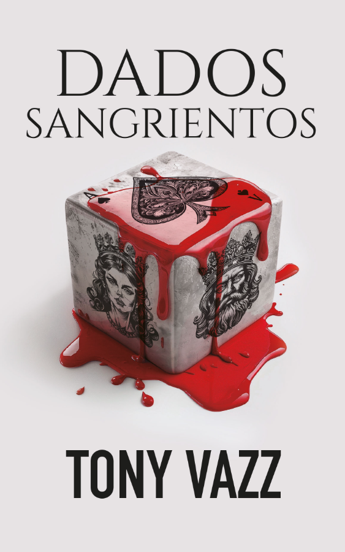

★ ★ ★ ★ ★
Casi 600 páginas y me he quedado con ganas de más.
Dani · Lector
Un espía americano. Una misión imposible.

“A veces, el control es solo una ilusión.”
Alzó tanto el vaso que la cerveza se le derramó por las comisuras, manchándole la camisa y dejándole la mandíbula pringosa. El polvoriento reloj de pared marcaba las nueve y veinte, hora de pedir la tercera ronda. Tragaba buches de manera mecánica, parando solo para darle caladas temblorosas a un cigarro, mientras seguía de reojo el oscilar del péndulo. George se preguntaba por qué su padre le había citado en aquella destartalada taberna del muelle, que apestaba a orines y serrín. Quizás no quería ser visto a su lado en uno de los cafés que rodeaban la embajada. Como de costumbre, llegaba tarde. Esperaba una de sus excusas habituales, que se había entretenido con un alto dignatario o que un cable diplomático requería su atención. A pesar de que detestaba su impuntualidad, una parte de él prefería que no apareciera. Hacía escasos días que había perdido el puesto de redactor en el periódico donde le había enchufado. No iba a ser una conversación agradable.
Miraba a ambos lados con la frente perlada de sudor. El fresco nocturno de mediados de junio se adueñaba de Buenos Aires y hacía que el mugriento tugurio estuviera casi desierto. Solo había un par de parroquianos viejos leyendo gacetas y un marinero que charlaba con el camarero, dejado caer al final de la barra, con sus morenos antebrazos llenos de tatuajes. La radio emitía un ronco discurso de Perón que todos ignoraban. Pidió otra jarra. El consumo empezaba a pasarle factura y tuvo que ir al servicio otra vez. A partir del primer litro de alcohol, sus riñones se negaban a procesar más líquido y su cuerpo lo expulsaba tal como lo bebía. Al regresar al mostrador encontró junto a su cerveza a un individuo trajeado, cuyo sombrero casi rozaba el techo.
―¿George Benavente? ―preguntó el tipo con un marcado acento norteamericano―. Su padre no ha podido venir. Acompáñeme.
El hombre se alejó de la barra sin esperar respuesta, moviéndose con una gracia y precisión que revelaban años de disciplina. George agarró su vaso medio vacío y le siguió hasta una mesa del fondo.
―¿Quién es usted?
―Veo que no me recuerda. Puede llamarme míster Hoffman. Vengo desde Nueva York expresamente para verle. Los informes que nos llegan sobre usted son decepcionantes.
Con un gesto impecable, liberó uno de los botones de su reluciente chaqueta al tiempo que se sentaba. Hoffman extrajo unos papeles de un reluciente maletín de cuero y los leyó en silencio. George fumaba tan nervioso que el humo se le metió en el ojo izquierdo y tuvo que frotárselo hasta llorar. Trataba de escudriñar a su extraño interlocutor, pero el rostro de Hoffman se mantenía impasible. Su robusta mandíbula, afeitada a la perfección, reflejaba la tenue luz de las lámparas colgantes, dándole un aspecto casi etéreo. A pesar de tenerle a un metro de distancia, le era imposible averiguar el color de sus ojos, ocultos bajo la sombra que proyectaba su sombrero.
―Sobre mi fracaso con la misión de desinformación, permítame decirle que...
―Silencio ―interrumpió Hoffman alzando la mano derecha mientras ojeaba los papeles y los leía en voz alta―. «El señor Benavente ha mostrado reiteradamente comportamientos negligentes, dejándose llevar por los peores vicios y poniendo en peligro su tapadera, así como anteponiendo sus intereses personales al cumplimiento del deber. Sus actos han comprometido no solo su misión, sino también la de su familia y el resto del cuerpo diplomático. Recomiendo sacarle con urgencia de Argentina y evaluar su futuro en nuestras filas».
Hoffman alzó la vista y la clavó en George, que jugueteaba con su vaso vacío y lo hacía bailotear ruidoso sobre la pegajosa madera. Observó que su cabello, aunque salpicado de gris, estaba teñido y repeinado. Hoffman sacó una pipa de fumar ya cargada y chasqueó una cerilla para encenderla.
―Suena como la voz de mi padre.
―Correcto. Llevo décadas trabajando codo con codo con él y le considero mi mentor. Puede que no se acuerde de mí, pero yo le vi crecer en la embajada de La Habana. Aunque no madurar, según me confesó su padre. Me informa que tiene usted cierta tendencia a llevarle la contraria, y ha decidido delegar en mí la supervisión de sus actividades, por el bien de nuestra nación. ―Hoffman apartó los papeles y se reclinó sobre la mesa. Sus ojos eran verdes―. Ahora debe elegir qué quiere hacer con su futuro. ¿Desea corregir su trayectoria y servir a su país, como lleva haciendo su familia varias generaciones, o prefiere tirarlo todo por la borda? Su destino está bajo su control.
Comenzó a abrir la boca cuando el retumbar del bocinazo de un barco le asustó. A George se le escapó el vaso, que rodó por la mesa con estrépito, pero la mano de Hoffman saltó como un resorte y lo cazó antes de que cayera al suelo. Su mente divagó un instante, captando parte del discurso radiofónico:
«En este momento histórico, es necesario que los descamisados argentinos y los obreros españoles de Franco, líder de la Madre Patria, colaboren con solidaridad para garantizar el futuro de nuestras dos naciones hermanas...»
Hoffman martilleó con el vaso tres veces en la mesa, demandando la atención de George.
―Si hay algo que he aprendido ―dijo este―, es que nada está bajo mi control. Por más que planeo mi futuro, siempre hay alguien inmiscuyéndose en mis asuntos...
―Basta de cháchara. No he viajado desde los Estados Unidos para darle apoyo psicológico. Vengo a ofrecerle que pruebe su valía.
―¿De qué se trata?
―Durante todo el año hemos recibido informes contradictorios de franceses e ingleses sobre la posición exterior del gobierno de Franco. Sospechamos que los rusos quieren dividir a nuestros aliados y provocar una crisis diplomática. Por otro lado, llevamos años boicoteando a España con un contundente bloqueo económico para provocar la caída del régimen, pero de alguna manera lo están esquivando. La estrategia de aislar a Franco de la comunidad internacional no está funcionando.
―No creo que la Unión Soviética esté detrás de esto.
―Lo que usted crea no nos importa. Necesitamos infiltrar nuestra propia misión de reconocimiento para extraer información, establecer alianzas con contactos locales y evaluar posibles emplazamientos para una futura base naval americana. ―Los ojos de Hoffman, que parecían absorber y evaluar todo, se posaron en una ventana―. ¿Ve ese barco, al fondo del muelle? Es un carguero que zarpará en unas horas con toneladas de trigo y víveres que Perón enviará a España, burlando nuestros embargos. En la bodega va un ataúd que contiene los restos de un diplomático español que está siendo repatriado. Usted viajará escondido en una de esas cajas de trigo y será recibido en el puerto de Cádiz por una colaboradora del servicio inglés que le dará todos los detalles de la misión y le guiará en sus movimientos. Lo más importante es que debe demostrar que está dispuesto a hacer lo que se le ordene. Sea lo que sea.
George contempló el débil reflejo de la luna en el agua iluminando el carguero atracado en el muelle, cuya silueta se recortaba en la noche. Su juicio estaba nublado por la cerveza y, llegado a este punto de la borrachera, tenía la insana manía de decir lo que pensaba.
―¿Y si me niego?
Las cejas de Hoffman se alzaron tan abruptamente que su sombrero se movió. Hoffman levantó su vaso y lo lanzó al suelo, rompiéndolo en mil pedazos. George miró hacia la barra. El camarero apagó la radio y dio un potente silbido, señal para que los pocos clientes se levantaran y abandonaran el bar. Una vez más, George sentía que el control de su vida se le escapaba de las manos.
―¿Cuándo debo partir?
―Ahora mismo. ―Hoffman deslizó con un enérgico ademán un maletín de cuero hacia él―. Aquí tiene todo lo que necesita para hacerse pasar por representante comercial, incluyendo un pasaporte argentino a nombre de «Jorge Benavente». Durante la travesía se mantendrá oculto para no llamar la atención de la inteligencia española. Varios miembros de la tripulación trabajan para nosotros y se encargarán de su alimentación. No debe intercambiar palabra con ellos. Hará escala en Tánger y allí cambiarán la carga a un barco español. Yo viajaré a Madrid como asociado del Banco Import-Export y estaré en la embajada hasta finales de agosto. A su llegada a Cádiz recibirá instrucciones sobre cómo ponerse en contacto conmigo. Al final de su misión, evaluaremos su carrera en el servicio secreto. ―Hoffman se levantó de la silla y extendió su mano, gesto que generó un profundo miedo en George―. Ahora entrégueme su pasaporte americano.
El silencio era tal que George podía oír el tic-tac del reloj de pared y el lento goteo de un grifo mal cerrado. Sacó su pasaporte diplomático y lo estrelló en la mesa, agarrando el maletín y saliendo a paso ligero sin despedirse.
―No nos decepcione, George. Es su última oportunidad.
El puerto hedía a petróleo quemado y sal, y los gritos e insultos de los pescadores perforaban el aire. El marinero de los tatuajes le esperaba fuera y le hizo un gesto con la cabeza señalando al barco. Anduvo tras él y se introdujeron en la bodega, donde un reluciente ataúd se encontraba rodeado por altas cajas de madera.
Casi 600 páginas y me he quedado con ganas de más.
De los libros que más me han atrapado de principio a fin.
Leído en menos de una semana porque era imposible dejarlo.
Es una lectura imprescindible para comprender el período de la posguerra española.
Equilibrio perfecto entre autenticidad y ficción.
La prosa huele a tabaco, sal y petróleo quemado. Te mete dentro.

Pasé cuatro años investigando y escribiendo Dados Sangrientos, mi primera novela. Me interesa la historia vista desde los márgenes: los espías mediocres, los diplomáticos alcohólicos, los personajes que no caben en los bandos.
Escribo con la frialdad del observador. Dejo que el lector juzgue. Si algo huele a tabaco rancio y sal marina, probablemente sea mío.
Estoy terminando la segunda novela.